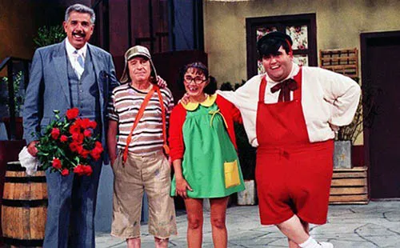

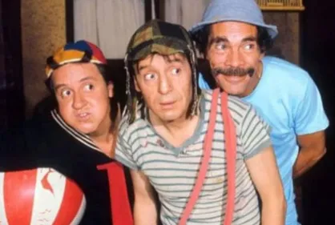
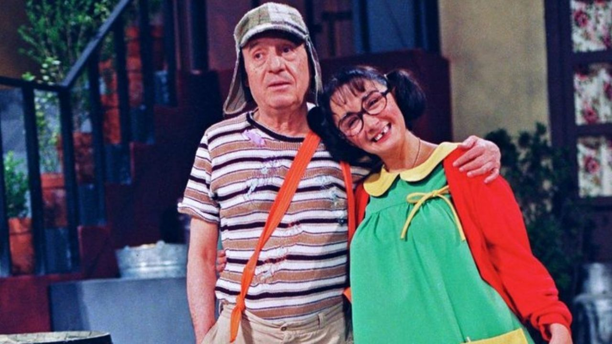
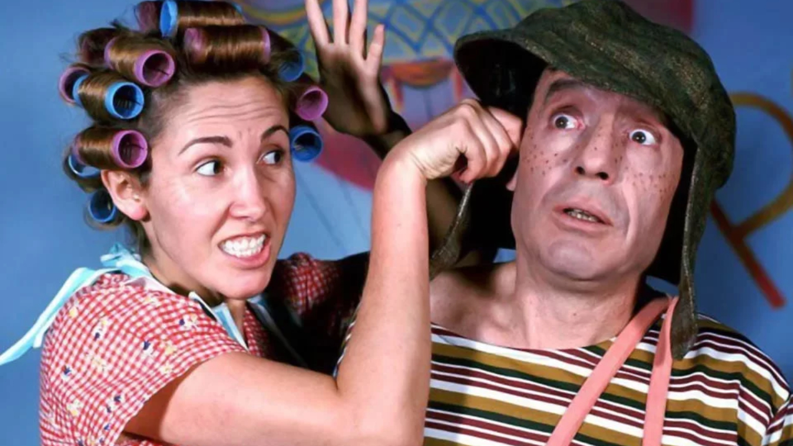
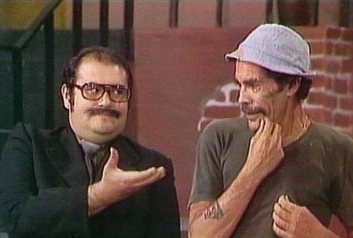
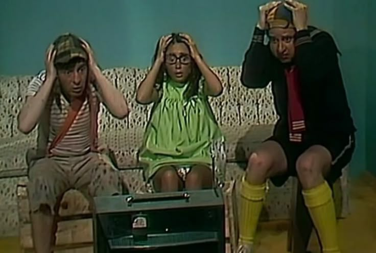
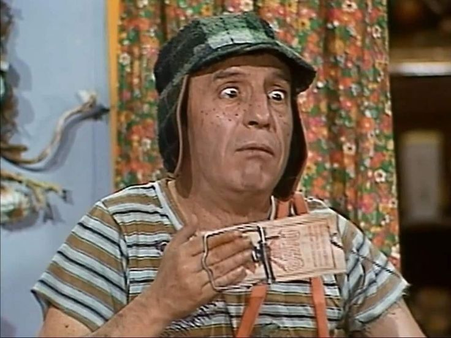
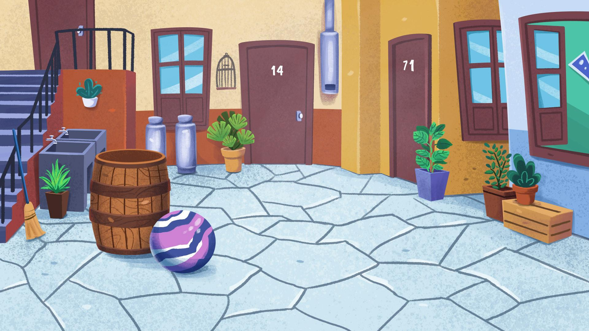
Como o humor inocente de uma vizinhança uniu gerações em todo o mundo.
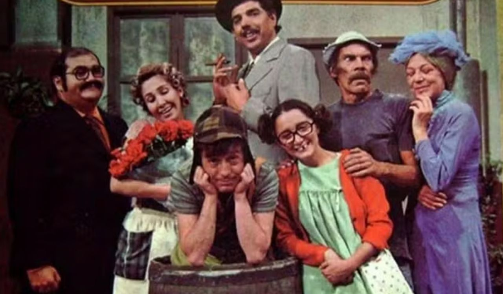
Antes que o mundo conhecesse a vila, Roberto Gómez Bolaños já era um verdadeiro artesão das palavras.
Conhecido como "Chespirito" (um "Pequeno Shakespeare"), ele tinha uma habilidade rara para escrever
histórias com rapidez. Em 1970, ao ganhar seu próprio espaço na TV, enfrentou um desafio: criar esquetes
curtos constantemente.
Dessa urgência surgiu um rascunho despretensioso. Bolaños imaginou uma criança pobre, de cerca de oito
anos, com roupas gastas, interagindo com um vendedor de balões em um parque. Era uma premissa simples,
mas de grande humanidade. Ainda assim, Bolaños percebeu que faltava algo: o menino precisava de um mundo,
de uma família, mesmo que não fosse de sangue.
A história passou a se passar em um cortiço mexicano, a famosa vecindad (a vila). Para povoar esse universo,
Chespirito não criou personagens aleatórios; criou uma engrenagem em que todos dependiam uns dos outros.
Para representar a figura paterna que o menino órfão não teve, nasceu Seu Madruga (Ramón Valdés), um
homem de bom coração, mas com dificuldades para manter um emprego. Ele trouxe consigo a esperteza da
filha, Chiquinha, amiga e, por vezes, rival do Chaves. Para acentuar o contraste cômico da pobreza de
Madruga e Chaves, surgiram vizinhos que se sentiam superiores, como Dona Florinda e seu filho Quico.
Eles não eram apenas um elenco; eram um retrato vivo da sociedade, unido pelo humor.
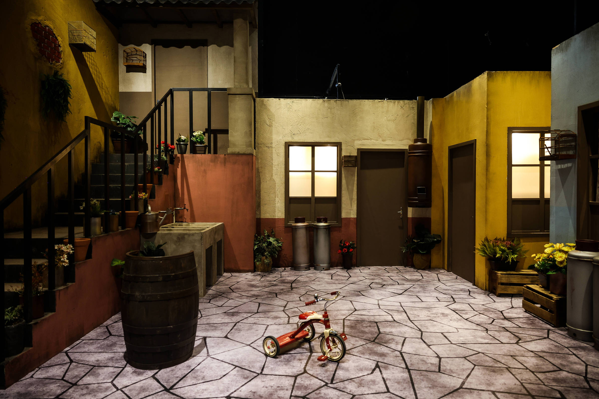
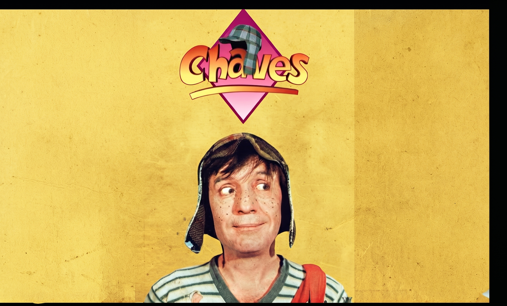
A estreia oficial nesse formato ocorreu em 20 de junho de 1971, pela Televisión Independiente de México
(Canal 8 — por isso o personagem recebeu o nome El Chavo del 8). A conexão entre os personagens foi tão
forte que os blocos curtos de 10 minutos ultrapassaram expectativas. Em 1973, Chaves tornou-se um
seriado independente de meia hora.
O sucesso que se seguiu foi extraordinário. A série conquistou a América Latina: o elenco deixou de ser
apenas um grupo de comediantes para tornar-se estrelas. Causavam tumultos em aeroportos, lotavam estádios
do Chile à Colômbia e chegaram a esgotar apresentações no Madison Square Garden, em Nova York.
A chegada de Chaves ao Brasil, em 1984, foi fruto do acaso. Os episódios chegaram ao recém-criado SBT
como um "brinde" dentro de um pacote de novelas da Televisa. Executivos não perceberam o potencial, e a
série foi inicialmente exibida como um "tapa-buraco" na grade.
Ainda assim, o público adotou a série rapidamente. O espectador via seu próprio vizinho no Seu Madruga,
a professora rígida no Professor Girafales, e o dono do imóvel no Senhor Barriga. O formato funcionou tão
bem em português quanto em espanhol. Nos anos 90 e 2000, Chaves alcançou o topo da audiência, competindo
com produções de grande orçamento.
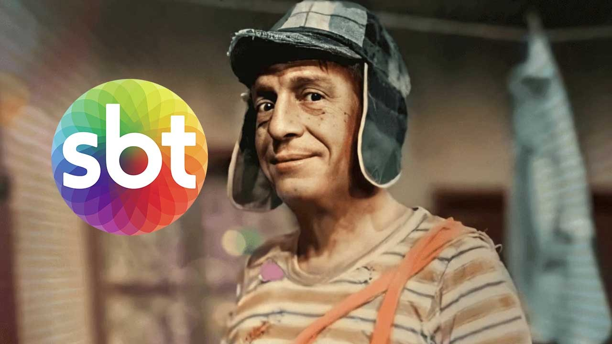







Hoje, mais de meio século após sua criação, Chaves foi traduzido para mais de 50 idiomas e transmitido da Angola à
Coreia do Sul. O seriado sobreviveu à transição das TVs de tubo para a era digital e ao surgimento das plataformas
de streaming.
Roberto Gómez Bolaños entendeu que o humor mais poderoso nasce das relações humanas. A trajetória da série mostra
que orçamentos bilionários não são o fator determinante: ao amarrar a vida de um menino órfão ao coração de toda
uma vizinhança, um quadro simples tornou-se eterno.